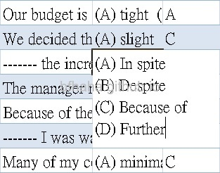
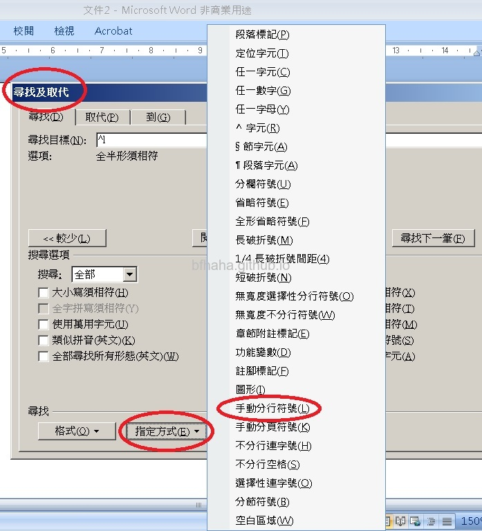
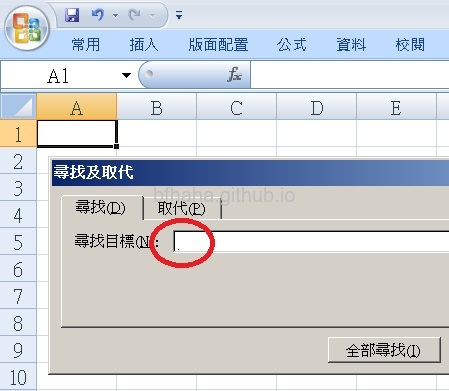

在Excel的公式中，如果公式的結果要顯示雙引號，在公式中就要輸入四個雙引號，例如在B1儲存格輸入公式=concatenate("""", A1, """")，就表示把A1儲存格的內容前後加上雙引號。
但這個方法有個缺點，就是公式中如果要顯示其他字串，我們也是要把字串夾在兩個雙引號中間來完成，例如=concatenate("""", A1, ", ", B1, """")。但當公式複雜時，就會有很多雙引號，造成理解上的困難，所以我們用其他方法來表示雙引號。
方法就是在公式中，使用CHAR(34)這個指令來表示雙引號，例如剛剛上面的例子，就變成=concatenate(CHAR(34), A1, ", ", B1, CHAR(34))
在Excel的儲存格中，如果要換行的話，要按Alt+Enter（按Enter的話會移動到下一個儲存格）。
有時候我們會想要插入或移除這些手動分行，雖然Excel又不像Word一樣可以指定搜尋或取代這種特殊字元
但其實還是可以做得到，只要在尋找或取代中，可以按下Ctrl+j，這時候閃爍的游標會變成英文句點，就表示這種手動分行符號。
這個方法是從這個部落格學來的，感恩師傅。